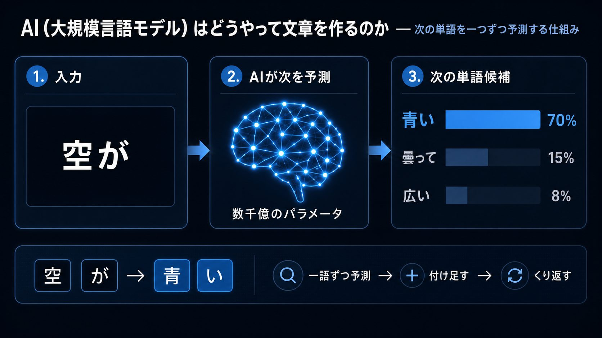
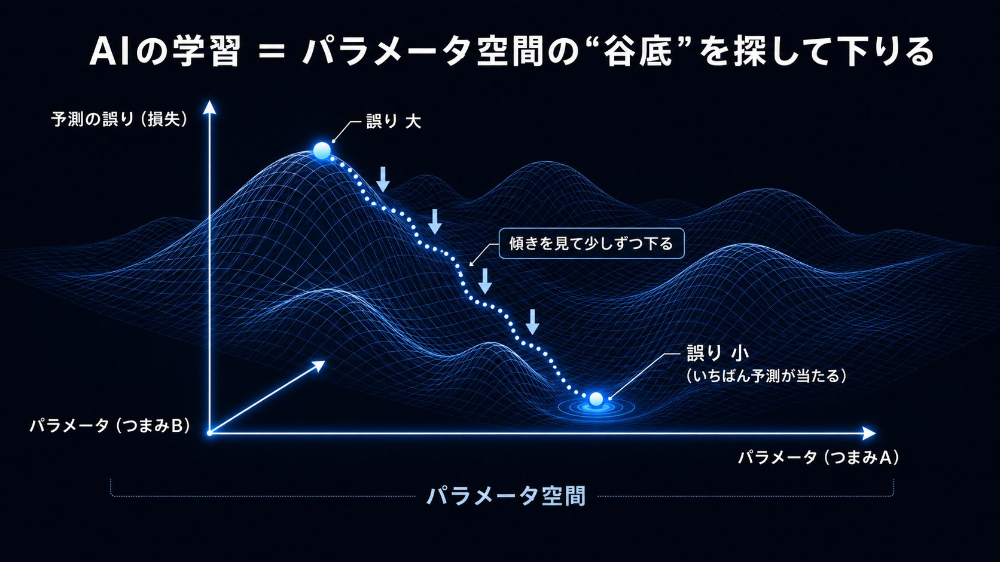
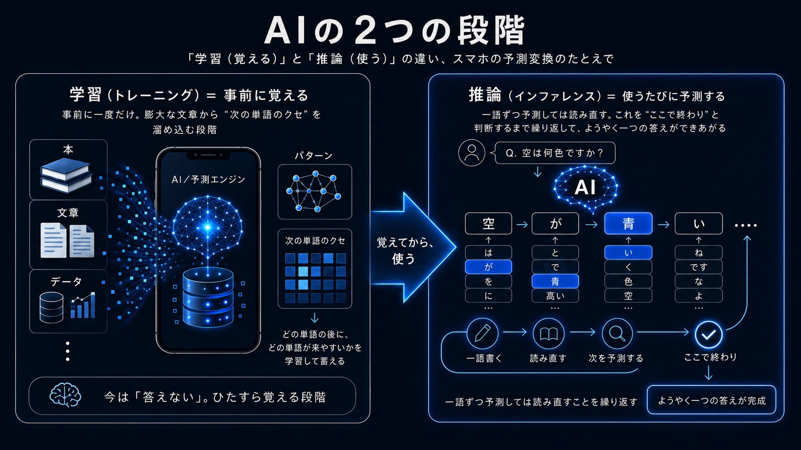

01 核心と問い — 「大きくする」から「長く考える」へ
「もっと大きくすれば、もっと賢くなる」——この単純な法則がAIの進歩を10年支えてきた。だが、それが頭打ちに近づいているとしたら？ 賢さを「学習時に詰め込む」のではなく「答える瞬間に作る」へと軸が移るとき、コスト・ハード・覇権の何が変わるのか。
2024年12月、AI研究の最大の祭典「NeurIPS」で、ある一言が会場をざわつかせた。
「事前学習は、我々の知る形では終わる 」——発言の主は、OpenAIの元主任研究者イリヤ・サツケバー。皮肉なことに彼は、「モデルを大きくすれば賢くなる」というスケーリング仮説 を最も強く信じ、実証してきた当の本人だった。その人物が「もう人類の文章（データ）を使い切った（ピークデータ）」と認めたのである。
ただし、これは「AIの進歩が止まる」という話ではない。止まったのは「大きくし続ける」という一つのやり方 であって、AIはすでに別の軸で再び加速し始めている。それが本稿のテーマ——「答える瞬間に長く考えさせる」推論時計算（test-time compute） への転換だ。
転換の3つの論点
何が終わったのか
「大きくすれば賢くなる」事前学習スケーリングの伸びが鈍化。良質なデータの枯渇（ピークデータ）と、巨大化に見合うほど性能が伸びない局面に入った。巨大化“だけ”では勝てなくなった。
何が始まったのか
推論時計算という新しい軸。答える瞬間に思考連鎖（下書き）を長く生成させ、強化学習で「考え方」を鍛える。o1やDeepSeek-R1が、学習だけでは届かない推論能力を引き出して見せた。
何が変わるのか
コスト構造が反転する。「速く安く即答」から「考えるほど高くつく」へ。半導体・電力の需要は推論側に移り、効率で追う者（DeepSeek型）と物量で押す者（巨大ラボ型）の覇権争いが始まる。
「大きくすれば賢くなる」——AIの進歩を10年支えたこの法則が頭打ちに近づき、軸足は「答える瞬間に長く考える」へと移りつつある。※イメージ画像（生成AI）
ただし、この転換の意味を正しくつかむには、「そもそもAIはどう考えているのか」「スケーリング則とは何か」をまず押さえておく必要がある。技術に詳しくない読者のために、次の章で基礎を3つの問いに分けて噛み砕いておこう。
02 AIの基礎知識 — 考え方とスケーリング則
本論に入る前の前提知識。専門用語は最小限にして、3つの問いに答える形で説明する。ここを読めば、なぜ今「転換」が起きているのかがすっと入ってくるはずだ。
Q1 そもそもAIはどう「考える」のか？
いま主流のAIは大規模言語モデル（LLM＝Large Language Model） と呼ばれる。インターネット上の膨大な文章を読み込んで訓練された“言葉のAI”だ。やっていることは驚くほど単純で、「次に来る単語を確率で当てる」 こと。たとえば「空が」の次に「青い」が来やすい、と無数の例から学んでいる。これを一語ずつ繰り返して文章を作る。
その「当てる勘どころ」を記憶しているのがパラメータ （数千億個におよぶ無数のつまみ）だ。つまりAIは意味を“理解”しているというより、膨大な経験から次の一語を予測し続ける機械 に近い。

AIは「次に来る単語を確率で当てる」を一語ずつ繰り返して文章を作る。その勘どころを担うのが数千億のパラメータだ。（図解：生成AI）
Q2 「スケーリング則」とは何か？
2020年ごろ、研究者たちはある経験則を発見した。「モデル（パラメータ）・学習データ・計算量、この3つを増やすほど、AIは予測上手になり賢くなる」 ——これがスケーリング則だ。しかも性能が運任せではなく、規模に応じてなめらかに向上することがわかった。
だからラボ各社は「とにかく大きくすれば勝てる」と巨大化競争に突き進んだ。GPT-4をはじめ近年の飛躍はこの法則の果実だ。だが3つの燃料のうち「データ」は有限 ——人類が書いた良質な文章には限りがある。これがいま指摘される「頭打ち」の正体だ。

学習とはパラメータ空間の「谷底（誤りが最小になる点）」を探して下りる作業だ。縦軸が予測の誤り、横2軸がパラメータの設定値。傾きを見て少しずつ下る手法を勾配降下法と呼ぶ。（図解：生成AI）
Q3 「学習」と「推論」はどう違う？（今回の核心）
AIには2つの局面がある。学習（トレーニング） ＝事前に大量の文章で“勉強”して賢さを身につける段階と、推論（インファレンス） ＝実際に質問されて答えを出す段階だ。受験にたとえるなら、学習は「試験前の勉強」、推論は「試験本番で問題を解くこと」にあたる。
もう少し踏み込むと、推論とは、訓練済みのAIが新しい質問を受け取り、覚えた勘どころ（パラメータ）を使って答えを一語ずつ生成していく“本番”の処理 だ。「一語ずつ生成する」とはどういうことか。スマホで文字を打つと、次に来そうな単語を予測して候補が出る——AIの答え方は、あれの超強力版だと思えばいい。質問を受けると、AIはまず最初の一語 を予測して置く。次に、その一語を含めた文章全体を見て次の一語 を予測する。さらにそれを含めて次の一語……と、自分が今まで書いた言葉を毎回読み直しながら、一語ずつ書き足していく 。これを「ここで終わり」と判断するまで繰り返して、ようやく一つの答えができあがる。
大事なのは、AIはどこかに保存してある完成品の答えを取り出しているのではない という点だ。質問されるたびに、その場で一語ずつ組み立て直している。だから推論は、学習（一度きりの“勉強”）と違ってAIが使われるたびに毎回ゼロから発生する 。利用者が増え、長く考えさせるほど、推論にかかる計算と電力はそのつど積み上がっていく。ここが後半で見る「コスト構造の反転」の伏線になる。
従来は学習時に賢さをすべて詰め込み 、推論は一瞬で即答させるのが当たり前だった。試験本番で、思いついた答えをそのまま書くようなものだ。だが新しい発想は逆——推論のとき、すぐ答えず「下書き」のように長く考えてから答えさせる 。難しい問題を小さく分け、途中式を書き、自分の答えを見直す。すると同じLLMでも正答率が大きく上がるとわかった。これが推論時計算だ。「賢さは、答える瞬間にも作れる」——この一点が、本稿で追う転換のすべてである。

学習＝事前に「次の単語のクセ」を覚える段階、推論＝使うたびにそのクセで一語ずつ答えを組み立てる段階。スマホの予測変換にたとえると分かりやすい。（図解：生成AI）
03 タイムライン — 「規模の時代」から「思考の時代」へ
2020年
スケーリング則の発見 — 「大きくすれば賢くなる」が法則に
OpenAIの研究者らが、モデル・データ・計算量を増やすほど性能がなめらかに向上することを論文で定式化した。「賢さは規模で買える」という確信が業界を貫き、その後の巨大化競争すべての号砲となった。
規模と性能の関係が法則化
巨大化競争の理論的根拠に
2022年
チンチラ則 — 「大きさ」だけでなく「データ量」も
DeepMindが、モデルの大きさに対して学習データが足りていないと指摘（チンチラ則）。最適な賢さには規模とデータの“バランス”が要ることが分かり、各社はより多くのデータを求めて走った。良質なデータの価値が一気に高まった転機だった。
データ量の重要性が判明
データ獲得競争が激化
2022年末〜2023年
スケーリングの黄金期 — ChatGPTとGPT-4
ChatGPTが世界を席巻し、続くGPT-4が「大きくすれば賢くなる」を見事に体現した。スケーリング則は最盛期を迎え、「あと数世代、巨大化を続ければ人間を超える」という楽観が広がった。投資も計算資源も青天井で積み上がっていった。
巨大化が性能を証明
「あと数世代で超える」楽観
2024年
頭打ちの兆候 — 「ピークデータ」と巨大化の鈍化
次世代の巨大モデルが、規模の拡大に見合うほど賢くならない——そんな声が業界内から漏れ始めた。12月、サツケバーがNeurIPSで「事前学習は終わる」「ピークデータに達した」と明言。スケーリング仮説の旗手自身による“限界の告白”は、強い衝撃を与えた。
巨大化の費用対効果が低下
良質データの枯渇が表面化
2024年末〜2025年
推論モデルの登場 — o1とDeepSeek-R1
OpenAIのo1が「答える前に長く考える」ことで数学・科学・コードの成績を一変させ、推論時計算が本物だと示した。さらに中国のDeepSeek-R1が、純粋な強化学習だけで 同等の推論能力を獲得（AIME正答率15.6%→71%）。しかも安価。「賢さは推論で作れる」が広く共有された瞬間だった。
o1が推論時計算を実証
DeepSeek-R1が低コストで追随
2025年〜2026年
推論が標準に — 「思考するAI」が前提の時代へ
2026年半ばには、Claude・GPT・Geminiといった主要モデルがいずれも「思考（Thinking）」機能を標準搭載。推論モデルであることが当たり前になった。同時に計算需要は学習から推論へと移り、推論がAI計算全体の6〜7割 を占めるまでに膨らんだ。ハードと電力の主戦場も推論側へ動いている。
全フロンティアが思考機能を搭載
計算需要の主役が推論へ
「規模の時代」は、GPUを敷き詰めたデータセンターの果てしない拡張として現れた。だが良質なデータという燃料が尽きかけたいま、勝負の軸は「どれだけ大きいか」から「どれだけ上手く考えるか」へ移りつつある。※イメージ画像（生成AI）
04 5つの視点 — 技術陣営の見取り図
「スケーリングは終わったのか」をめぐり、技術者・企業・投資家の見方は割れている。国家の対立ではなく、どの戦略に賭けるか という技術陣営の対立軸で、5つの立場を整理する。下のバーは「スケーリング継続への楽観度」を示す。
カード表示
比較表
「壁ではない。踊り場だ。計算を積み増せば、まだ伸びる」
核心的主張
事前学習の鈍化は“終わり”ではなく一時的な踊り場だ。データが足りないなら合成データで補い、計算資源をさらに積み増せばよい。実際、設備投資を続ける陣営は性能を伸ばし続けていると主張する。推論時計算も「スケーリングの新しい軸が増えただけ」と捉える。
賭けの中身
年間数千億ドル規模の設備投資を続け、計算量で他を引き離す。学習・推論の両面でハードを握る者が勝つという「物量の論理」に賭けている。
「賢さは“事前”に詰め込むものではない。“答える瞬間”に作るものだ」
核心的主張
巨大化に頼らずとも、答える瞬間に長く思考連鎖を生成させ、強化学習で「考え方」を鍛えれば性能は伸びる。o1やDeepSeek-R1は、学習だけでは届かない領域に推論時計算で到達して見せた。これは事前学習の限界を“迂回”する正攻法だと考える。
賭けの中身
モデルの大きさよりも「推論アルゴリズムと強化学習の設計」に投資する。同じ規模のモデルから、より多くの知性を引き出すことを狙う。
「投資は天井知らず、収益は地を這う。これはどこかで見た光景だ」
核心的主張
スケーリングの鈍化は、AIへの過剰な期待が現実に追いつかれる兆候だ。巨額の設備投資に見合う収益はまだ立っていない。投資銀行は「いまのAI熱狂は1997年のITバブル前夜に似る」と警告する。推論時計算も「コスト増を正当化する新しい物語」にすぎない、と冷ややかに見る。
賭けの中身
誇大広告と実需を切り分け、過熱の調整局面に備える。技術の進歩そのものより、投資回収の現実性を厳しく問う。
「アルゴリズムが何を望もうと、最後は電気と半導体が天井を決める」
核心的主張
論争の決着は、最終的に物理的制約がつける。推論時計算は「答えるたびに長く考える」ぶん、推論側の計算と電力を急増させる。すでに推論はAI計算需要の6〜7割を占め、データセンターの電力需要は2026年に1,000テラワット時を超える見込みだ。賢さの上限は、もはやアルゴリズムより電力と半導体供給 が決める。
賭けの中身
電力・冷却・先端半導体という“ボトルネック”を握ることが、AIの実効的な上限を支配すると見る。発電所と半導体工場こそが新しい主戦場だ。
「巨人と同じ土俵で戦う必要はない。安く・小さく・賢くで追い抜く」
核心的主張
巨大化が頭打ちなら、勝負は効率に移る。大きなモデルの“考え方”を小さなモデルに移植する蒸留や、計算を絞る工夫で、はるかに安く同等の賢さに迫れる。DeepSeek-R1は競合の20〜50分の1のコストを実現し、その手法を公開した。「賢さの民主化」が起きると見る。
賭けの中身
オープンな低コストモデルで、巨大ラボの寡占を切り崩す。資金力より工夫で勝負し、普及の速さで存在感を高める。
立場
基本スタンス
最大の主張
賭けの中身
スケーリング継続派 物量で押す 壁ではなく踊り場、まだ伸びる 計算量への巨額投資で引き離す 推論時計算・効率化派 考え方で勝つ 賢さは答える瞬間に作れる 推論アルゴリズム・強化学習に投資 懐疑・限界論派 過熱を疑う 投資と収益の乖離、バブル前夜 誇大広告と実需を切り分ける ハード・電力の制約視点 物理が律速 最後は電力と半導体が天井を決める 電力・冷却・先端半導体を握る オープン・低コスト派 効率で追う 安く小さく賢くで追い抜く 蒸留と公開で寡占を崩す
「大きさ」で押すのか、「深さ（考え方）」で勝つのか——AIの次の覇権は、この天秤がどちらに傾くかで決まる。物量・効率・電力・投資、それぞれの陣営が異なる戦略に賭けている。※イメージ画像（生成AI）
05 データ・統計
「長く考えさせる」と何が変わるか（数学AIME 正答率, %）
同じ系統のモデルでも、答える前に思考連鎖を生成させる「推論あり」にすると、難関数学（AIME）の正答率が大きく跳ね上がる。DeepSeek-R1は純粋な強化学習で15.6%→71%へ。
出典：DeepSeek-R1 論文・各種ベンチマーク
AI計算需要に占める「推論」の割合（%）
計算需要の主役が「学習」から「推論」へ移っている。2024年の約40%から2026年には6〜7割へ。2030年には75%に達するとの予測も。
出典：業界アナリスト各種・Deloitte 2026予測
15.6%→71%
DeepSeek-R1が強化学習で伸ばした数学推論（AIME）正答率
60〜70%
推論がAI計算需要に占める割合（2026年・2024年は約40%）
1/20〜1/50
DeepSeek-R1の推論コスト（競合モデル比）
7,250億ドル
2026年ハイパースケーラー設備投資（最大・各社合計）
1,000TWh超
2026年データセンター電力需要（2023年比 約2倍）
06 深掘り — これから2〜3年で何が起きるか
「スケーリングは終わった」のではなく、「スケーリングの軸が増えた」と捉えるのが正確だ。では、この先はどう動くのか。終わり方・コスト・覇権・物理の壁という4つの観点で、今後2〜3年を見通す。
① スケーリングは「終わる」のではなく「形を変える」
頭打ちになったのは「事前学習をひたすら大きくする」という一つのやり方にすぎない。賢さを増やす軸は、いまや三層に分かれた——事前学習（知識の土台）・事後学習（強化学習で考え方を鍛える）・推論時計算（答える瞬間に長く考える） 。今後は、巨大化の伸びが鈍るぶんを後者2つで補う形が主流になる。「データの壁」を越える鍵は、人間が書いた文章ではなく、AI自身が生成・検証する合成データと、自分の推論を自分で採点する強化学習に移っていく。
② コスト構造の反転 — 「考えるほど高くつく」時代へ
従来のAIは「一度学習させれば、あとは安く即答」が前提だった。だが推論時計算では、難しい問いほど長く考え、そのぶん計算と電力を消費する。コストは「使うたび・考えるたび」に発生する変動費へと性質を変える。これは利用が増えるほど運用費が膨らむことを意味し、「いつ長く考えさせ、いつ即答させるか」を見極める設計 が競争力を左右する。安く深く考えさせる効率化が、次の主戦場になる。
③ 覇権の分岐 — 「物量」か「効率」か
巨大ラボは計算量への巨額投資（物量）で先行し、DeepSeekに代表される陣営は蒸留と公開（効率）で追う。事前学習一本槍の時代は資金力がそのまま序列だったが、推論時計算と効率化の時代には「同じ規模からどれだけ知性を引き出すか」という工夫が効いてくる。資金の少ない国・企業にも勝ち筋が生まれ、覇権図はやや開かれる 可能性がある。一方で、推論需要を支える電力と半導体を握る者の優位はむしろ強まる。
④ 最後の壁は「物理」 — 電力と半導体が天井を決める
アルゴリズムがどれだけ賢くなろうと、それを動かすのは電気と半導体だ。推論が計算需要の6〜7割を占め、データセンターの電力需要が2026年に1,000テラワット時を超えるいま、AIの実効的な上限は次第に発電所と半導体工場の能力 に縛られていく。「もっと考えさせたい」という欲求は、そのまま「もっと電力が要る」に直結する。AIの未来を最終的に律速するのは、モデルの賢さではなく、社会がそのエネルギーをどれだけ用意できるかかもしれない。
「もっと大きく」という単純な処方箋が効きにくくなったいま、AIの進歩はより多面的で、より戦略的なものになった。
データの壁、コストの反転、効率と物量のせめぎ合い、そして電力という物理の天井——次の2〜3年は、これらの制約をどう乗り越えるかが、技術と覇権の両面で問われる時間になる。「賢さは、もはやただ買えるものではない」という現実が、いま静かに広がっている。
推論時計算の本質は「答える前に、多くの可能性を辿って考える」こと。だがその一手ごとに計算と電力を食う。賢さを“答える瞬間に作る”時代は、エネルギーという物理の壁と背中合わせで進む。※イメージ画像（生成AI）